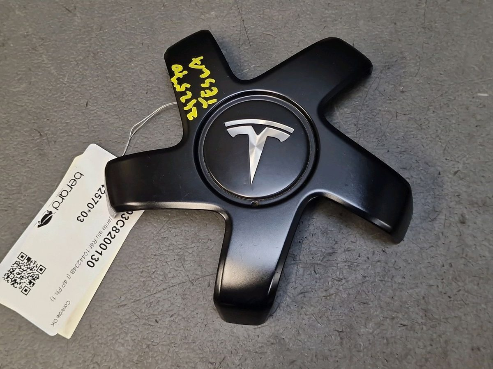

Blog
Tesla Center Cap Sizes — Three Published Answers, One Caliper

Most brands have a cap size. Tesla has a cap-size debate. The published sources for Model 3, Y, S and X caps do not agree with each other, and this site's rule for disagreements is simple: we print the conflict, name the sources, and refuse to crown a winner the evidence hasn't earned. Here is the whole argument.
Answer one: 50.8 mm, with a 57.15 mm variant
A Tesla center-cap buying guide states that most OEM Tesla caps are 2.00 in (50.8 mm), with a 57.15 mm variant tied to part number 6005879-04-A. It's a precise claim — hundredths of a millimetre — from a guide written to help people buy these caps.
Answer two: 58 mm, all of them
A TeslaMotorsClub owner's post, based on measuring actual factory caps, states that all factory Tesla caps are 58 mm. Owner-measured evidence is not nothing — it's the same kind of evidence this site tells you to produce — but one owner's fleet is not a production run, and a flat "all" is a strong word in fitment.
Answer three: 56 mm, everywhere you shop
Marketplace listings commonly sell 56 mm caps for the Model 3/Y/S/X. Listings reflect what sellers stock and what buyers accept, which is evidence of a sort — the weakest sort in this dispute, because marketplaces also repeat each other's numbers.
Why we won't pick — and what you should do
Three answers, a spread of more than 7 mm from lowest to highest, and no part-number-documented source strong enough to end it. Any site that prints one of these numbers as the Tesla cap size is more confident than the evidence allows. Meanwhile, one number that is solidly documented is the Model 3/Y hub bore: 64.1 mm (5×114.3) — which, you will notice, matches none of the three cap claims, because the bore is not the cap. If a listing ever quotes 64.1 as a Tesla "cap size," you now know exactly which mistake you're looking at.
So: measure. If you still have a cap, caliper the face and the clip tips. If you've lost one, measure the wheel opening. Ninety seconds of measuring outperforms every published opinion on this page — including, if it comes to it, ours.
Disclosure: this site stocks nothing and sells nothing directly — we earn on referrals, not on parts. Where we mention dealers or marketplaces, any shopping link that becomes an active affiliate link may pay us a small commission at no extra cost to you. That model is exactly why our advice starts with a caliper instead of a checkout button.
Related guides
- The Mazda Center Cap Argument
- Lost Your Center Cap With No Spare? Measure the Wheel Opening
- By Brand — the Tesla entry
Next steps
Run your numbers through the Cap Finder, or re-check them with the How to Measure walkthrough before you order.
Shop this fitment on eBay Cap Concierge — we find your cap
Disclosure: shopping links are plain eBay searches today; when our eBay Partner Network links activate, purchases through them may earn oemcentercaps.com a commission at no cost to you. Advertise on oemcentercaps.com
Sources: carinterior.alibaba.com Tesla center-cap buying guide (50.8 mm claim, 57.15 mm variant, part 6005879-04-A); TeslaMotorsClub owner measurement post (58 mm claim); accio.com marketplace synthesis (56 mm listings); unpluggedperformance.com and modbargains.com Model 3/Y fitment guides for the 64.1 mm bore. Conflict published openly — verify by measuring.